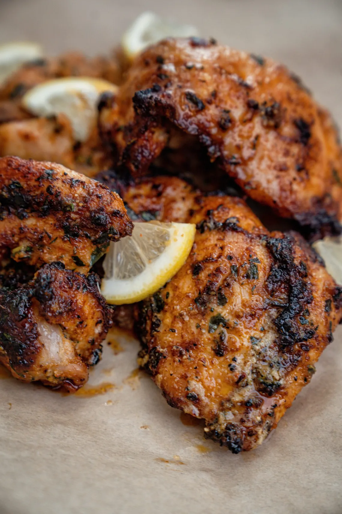
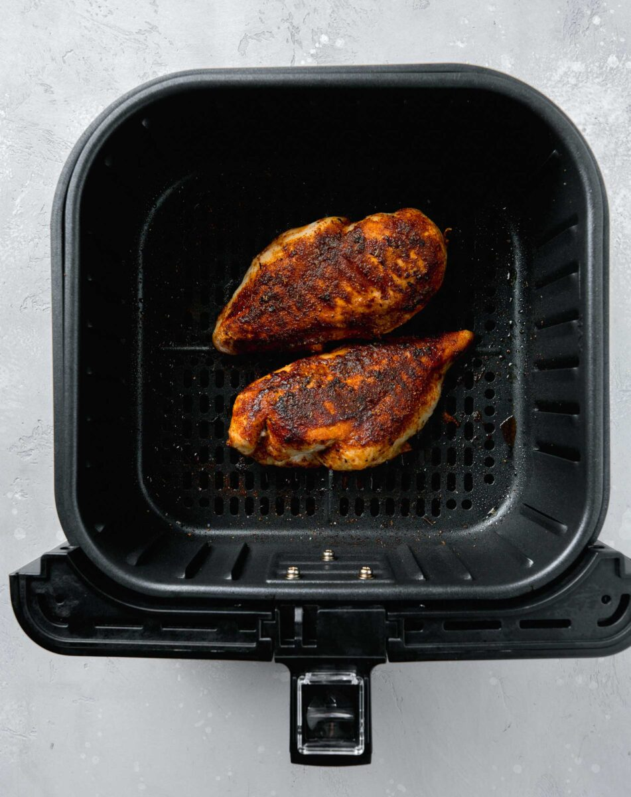
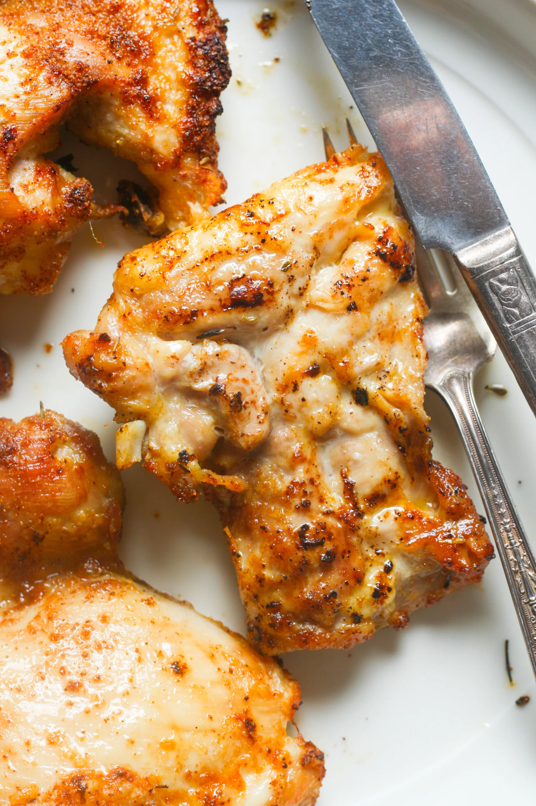
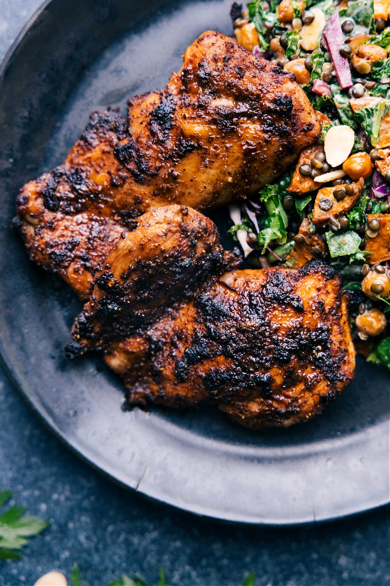
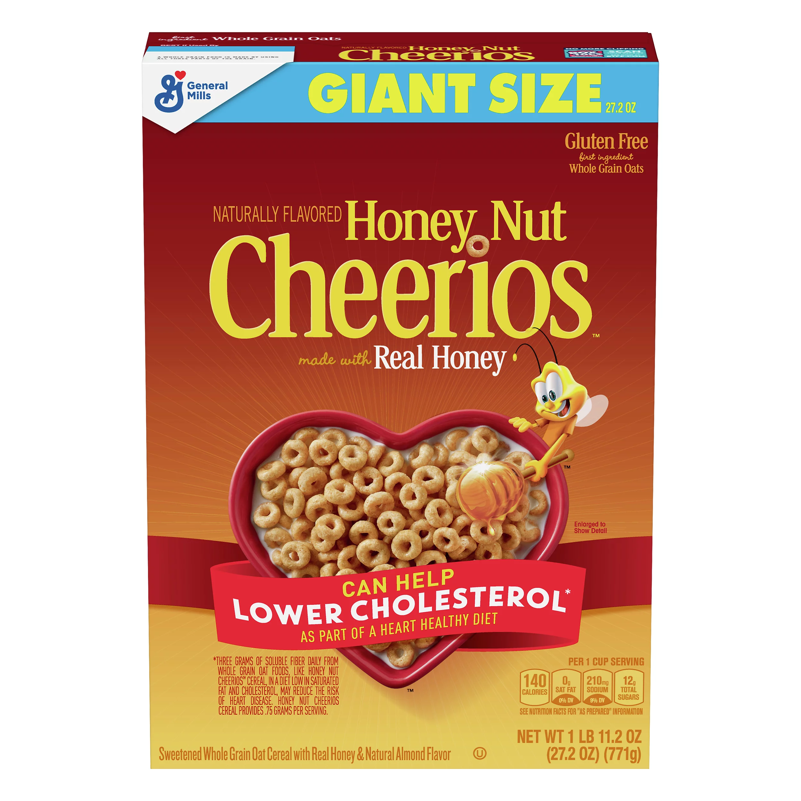
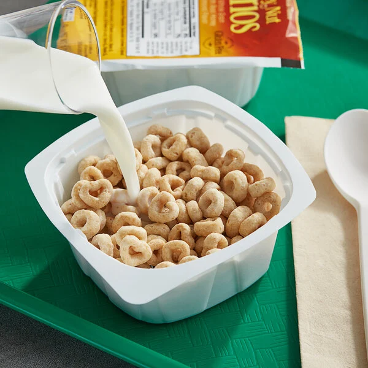
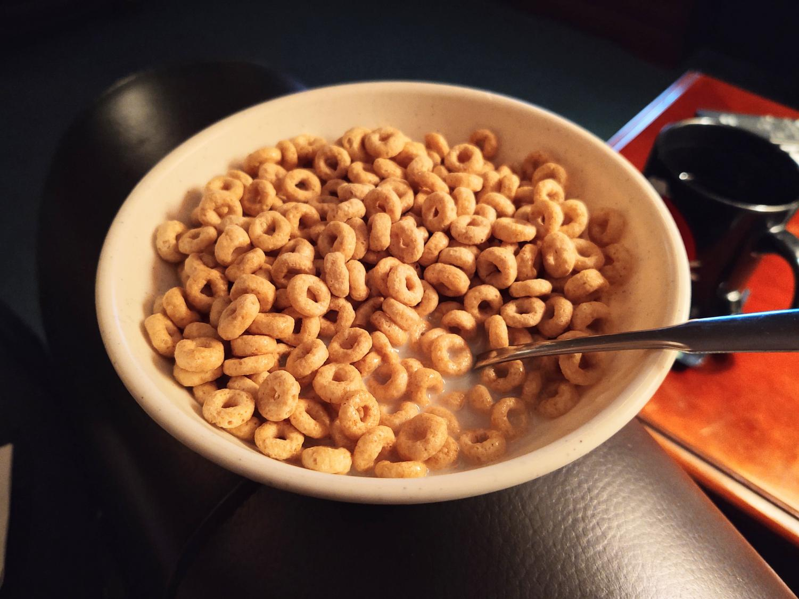
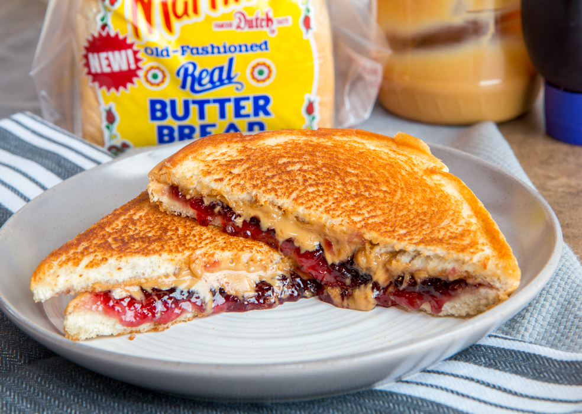
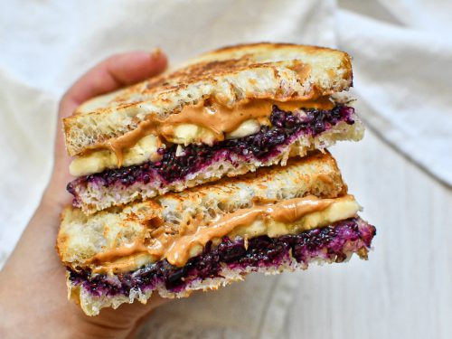

Recipes
Air Fryer Chicken Thighs
I learned how to make chicken in the air fryer from Youtube, but I then tried seasoning chicken myself. It isn’t anything spectacular by any means, but it is quick and easy.
Recipe Ingredients:
- Chicken Thighs (2-4 pieces)
- Salt
- Paprika
- Blackened Chicken seasoning
- Olive oil
Recipe Steps:
- In a large bowl, place 2-4 pieces of chicken thighs in
- Add the salt, paprika, blackened chicken seasoning by eyeballing it
- Mix the seasoning in with the chicken
- Preheat air fryer to 400 degrees for 3 minutes
- Rub some olive oil on the chicken
- Place in air fryer for 22 minutes
- Flip at 12 minutes
- Cook for remainder of time, until the temperature is 165 degrees
Photo Gallery



Honey Nut Cheerios
I learned how to make cereal when I was young
Recipe Ingredients:
- Honey Nut cheerios
- Milk
- Spoon
- Bowl
Recipe Steps:
- In a bowl, pour some milk
- Pour the cereal in
- enjoy with a spoon!
Photo Gallery


Peanut Butter and Jelly Sandwich

Easiest sandwich and delicous!
Recipe Ingredients:
- Peanut Butter
- Jelly
- Bread
- knife
Recipe Steps:
- Take two slices of bread out
- Using the knife, apply peanut butter onto one slice.
- Wipe the knife off
- Apply jelly to the other slice with knife
- Put sandwich together
Photo Gallery



Kaiping Lu